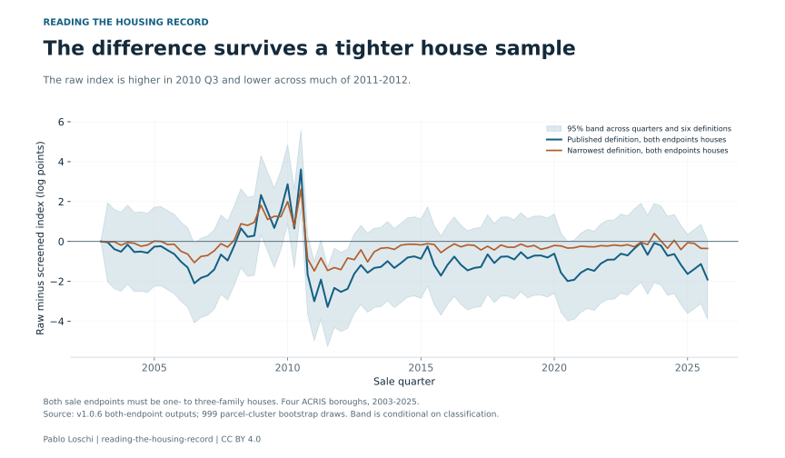

A dollar amount in a property record looks like a sale price. For some foreclosure transfers, it can describe something else: an auction bid, a judgment or debt discharged when a lender takes title.
That distinction matters when records are used to track home values. An amount entered for a legal or tax purpose can pass through a public sales file and into an index as though it came from an ordinary purchase.
My study identifies 16,655 deeds whose recorded consideration can follow a legal rule among 1.47 million deed-family records in Manhattan, the Bronx, Brooklyn and Queens from 2003 to 2025. It then asks how removing repeat-sale pairs involving those transfers changes a price index.
For one- to three-family houses across the four boroughs, the largest difference is 3.7 log points in the third quarter of 2010, roughly 4%. The comparison is between two constructed indices. Neither is a known true measure of every home's market value.


Read the chart data as a table
| Quarter | Including flagged | Excluding flagged |
|---|---|---|
| 2003Q1 | 100.00 | 100.00 |
| 2003Q2 | 102.15 | 102.10 |
| 2003Q3 | 107.39 | 107.74 |
| 2003Q4 | 112.62 | 113.17 |
| 2004Q1 | 117.04 | 117.13 |
| 2004Q2 | 122.65 | 123.28 |
| 2004Q3 | 129.72 | 130.30 |
| 2004Q4 | 134.99 | 135.74 |
| 2005Q1 | 143.39 | 143.64 |
| 2005Q2 | 150.80 | 151.07 |
| 2005Q3 | 161.03 | 161.67 |
| 2005Q4 | 167.60 | 168.59 |
| 2006Q1 | 176.90 | 178.62 |
| 2006Q2 | 182.78 | 185.07 |
| 2006Q3 | 187.72 | 191.57 |
| 2006Q4 | 191.14 | 194.59 |
| 2007Q1 | 185.61 | 188.73 |
| 2007Q2 | 181.37 | 183.79 |
| 2007Q3 | 177.85 | 178.96 |
| 2007Q4 | 180.13 | 181.77 |
| 2008Q1 | 174.18 | 174.60 |
| 2008Q2 | 165.41 | 164.35 |
| 2008Q3 | 161.14 | 160.83 |
| 2008Q4 | 153.88 | 153.18 |
| 2009Q1 | 142.48 | 139.09 |
| 2009Q2 | 137.41 | 135.36 |
| 2009Q3 | 133.38 | 132.33 |
| 2009Q4 | 130.54 | 128.62 |
| 2010Q1 | 127.71 | 124.06 |
| 2010Q2 | 127.27 | 126.37 |
| 2010Q3 | 122.36 | 117.93 |
| 2010Q4 | 119.94 | 121.95 |
| 2011Q1 | 117.94 | 121.53 |
| 2011Q2 | 120.05 | 122.33 |
| 2011Q3 | 123.15 | 127.21 |
| 2011Q4 | 118.15 | 120.91 |
| 2012Q1 | 116.58 | 119.50 |
| 2012Q2 | 120.70 | 123.74 |
| 2012Q3 | 123.72 | 125.77 |
| 2012Q4 | 120.87 | 122.30 |
| 2013Q1 | 117.42 | 119.25 |
| 2013Q2 | 128.83 | 130.54 |
| 2013Q3 | 133.45 | 135.14 |
| 2013Q4 | 133.45 | 134.73 |
| 2014Q1 | 136.00 | 137.76 |
| 2014Q2 | 135.88 | 137.38 |
| 2014Q3 | 146.06 | 147.18 |
| 2014Q4 | 145.23 | 146.26 |
| 2015Q1 | 149.72 | 151.06 |
| 2015Q2 | 151.17 | 151.46 |
| 2015Q3 | 162.12 | 164.01 |
| 2015Q4 | 163.64 | 166.42 |
| 2016Q1 | 163.56 | 165.45 |
| 2016Q2 | 167.24 | 168.48 |
| 2016Q3 | 174.29 | 176.30 |
| 2016Q4 | 176.63 | 179.18 |
| 2017Q1 | 185.13 | 187.52 |
| 2017Q2 | 183.17 | 185.53 |
| 2017Q3 | 193.29 | 194.50 |
| 2017Q4 | 198.90 | 201.01 |
| 2018Q1 | 197.24 | 198.72 |
| 2018Q2 | 199.74 | 201.20 |
| 2018Q3 | 208.27 | 210.11 |
| 2018Q4 | 210.84 | 211.97 |
| 2019Q1 | 213.78 | 215.56 |
| 2019Q2 | 212.76 | 214.22 |
| 2019Q3 | 217.65 | 219.15 |
| 2019Q4 | 219.60 | 221.37 |
| 2020Q1 | 227.13 | 228.55 |
| 2020Q2 | 232.90 | 236.55 |
| 2020Q3 | 228.65 | 233.22 |
| 2020Q4 | 236.65 | 241.14 |
| 2021Q1 | 238.75 | 242.44 |
| 2021Q2 | 246.41 | 249.74 |
| 2021Q3 | 247.84 | 251.48 |
| 2021Q4 | 252.87 | 255.62 |
| 2022Q1 | 257.28 | 259.63 |
| 2022Q2 | 263.12 | 265.51 |
| 2022Q3 | 268.67 | 270.42 |
| 2022Q4 | 265.35 | 267.26 |
| 2023Q1 | 264.31 | 265.42 |
| 2023Q2 | 272.67 | 272.82 |
| 2023Q3 | 270.17 | 272.11 |
| 2023Q4 | 272.68 | 272.87 |
| 2024Q1 | 271.63 | 272.17 |
| 2024Q2 | 281.81 | 284.19 |
| 2024Q3 | 279.82 | 281.61 |
| 2024Q4 | 290.98 | 294.42 |
| 2025Q1 | 294.57 | 299.45 |
| 2025Q2 | 310.52 | 314.82 |
| 2025Q3 | 302.10 | 305.51 |
| 2025Q4 | 313.20 | 319.22 |
From a legal amount to a sales record
A foreclosure auction can transfer a property to the foreclosing lender. An owner can also convey a property to a lender in place of completing foreclosure. These instruments have legal functions that differ from an ordinary negotiated sale to a new household.
New York's transfer-tax rules can use amounts tied to those functions. The study reads the type of instrument and the parties involved to screen for such transfers. A low amount or a lender-like name on its own does not establish the classification.
The records contain some striking differences. About 70% of the flagged deeds carry cents in the consideration field, compared with about 6% of ordinary deeds. About 55% enter retained repeat-sale pairs, compared with 27% of ordinary deeds. These are descriptive patterns, not rules that classify a deed by themselves.
Among screened flagged deeds from 2016 to 2025, about 94% to 95% appear in the public sales file with the same amount. The amount can therefore travel beyond the land registry into the data researchers use.
The timing changes more clearly than the crash depth
The index including flagged transfers is higher in parts of 2009 and 2010, and lower across 2011 and 2012, than the index excluding them. That pattern affects the timing of the measured housing cycle.
A narrower definition still produces a maximum difference of about 2.6 log points. Requiring both endpoints of a repeat sale to be houses barely changes the main result: the maximum difference becomes 3.6 log points.



Read the chart data as a table
| Quarter | Difference (log points) | 95% lower | 95% upper |
|---|---|---|---|
| 2003Q1 | 0.00 | 0.00 | 0.00 |
| 2003Q2 | -0.04 | -2.03 | 1.94 |
| 2003Q3 | -0.39 | -2.37 | 1.60 |
| 2003Q4 | -0.52 | -2.50 | 1.47 |
| 2004Q1 | -0.16 | -2.14 | 1.82 |
| 2004Q2 | -0.53 | -2.52 | 1.45 |
| 2004Q3 | -0.51 | -2.49 | 1.48 |
| 2004Q4 | -0.57 | -2.56 | 1.41 |
| 2005Q1 | -0.26 | -2.25 | 1.72 |
| 2005Q2 | -0.24 | -2.22 | 1.74 |
| 2005Q3 | -0.44 | -2.43 | 1.54 |
| 2005Q4 | -0.63 | -2.62 | 1.35 |
| 2006Q1 | -1.01 | -3.00 | 0.97 |
| 2006Q2 | -1.31 | -3.29 | 0.68 |
| 2006Q3 | -2.10 | -4.08 | -0.11 |
| 2006Q4 | -1.83 | -3.81 | 0.16 |
| 2007Q1 | -1.71 | -3.70 | 0.27 |
| 2007Q2 | -1.41 | -3.39 | 0.58 |
| 2007Q3 | -0.66 | -2.64 | 1.33 |
| 2007Q4 | -0.96 | -2.94 | 1.03 |
| 2008Q1 | -0.21 | -2.19 | 1.78 |
| 2008Q2 | 0.66 | -1.33 | 2.64 |
| 2008Q3 | 0.23 | -1.75 | 2.22 |
| 2008Q4 | 0.29 | -1.70 | 2.27 |
| 2009Q1 | 2.33 | 0.34 | 4.31 |
| 2009Q2 | 1.50 | -0.48 | 3.48 |
| 2009Q3 | 0.68 | -1.31 | 2.66 |
| 2009Q4 | 1.57 | -0.41 | 3.56 |
| 2010Q1 | 2.87 | 0.89 | 4.85 |
| 2010Q2 | 0.65 | -1.33 | 2.64 |
| 2010Q3 | 3.61 | 1.63 | 5.59 |
| 2010Q4 | -1.66 | -3.64 | 0.33 |
| 2011Q1 | -3.00 | -4.98 | -1.01 |
| 2011Q2 | -1.91 | -3.90 | 0.07 |
| 2011Q3 | -3.28 | -5.27 | -1.30 |
| 2011Q4 | -2.33 | -4.32 | -0.35 |
| 2012Q1 | -2.53 | -4.52 | -0.55 |
| 2012Q2 | -2.38 | -4.36 | -0.39 |
| 2012Q3 | -1.62 | -3.60 | 0.36 |
| 2012Q4 | -1.19 | -3.17 | 0.80 |
| 2013Q1 | -1.57 | -3.55 | 0.41 |
| 2013Q2 | -1.33 | -3.31 | 0.66 |
| 2013Q3 | -1.28 | -3.26 | 0.71 |
| 2013Q4 | -0.99 | -2.97 | 1.00 |
| 2014Q1 | -1.33 | -3.32 | 0.65 |
| 2014Q2 | -1.08 | -3.07 | 0.90 |
| 2014Q3 | -0.81 | -2.79 | 1.18 |
| 2014Q4 | -0.75 | -2.73 | 1.23 |
| 2015Q1 | -0.87 | -2.85 | 1.12 |
| 2015Q2 | -0.25 | -2.23 | 1.74 |
| 2015Q3 | -1.19 | -3.18 | 0.79 |
| 2015Q4 | -1.72 | -3.70 | 0.27 |
| 2016Q1 | -1.17 | -3.15 | 0.81 |
| 2016Q2 | -0.76 | -2.75 | 1.22 |
| 2016Q3 | -1.17 | -3.16 | 0.81 |
| 2016Q4 | -1.45 | -3.44 | 0.53 |
| 2017Q1 | -1.33 | -3.31 | 0.65 |
| 2017Q2 | -1.28 | -3.26 | 0.70 |
| 2017Q3 | -0.65 | -2.63 | 1.34 |
| 2017Q4 | -1.08 | -3.07 | 0.90 |
| 2018Q1 | -0.77 | -2.75 | 1.21 |
| 2018Q2 | -0.75 | -2.74 | 1.23 |
| 2018Q3 | -0.91 | -2.89 | 1.08 |
| 2018Q4 | -0.54 | -2.53 | 1.44 |
| 2019Q1 | -0.85 | -2.83 | 1.13 |
| 2019Q2 | -0.71 | -2.70 | 1.27 |
| 2019Q3 | -0.70 | -2.69 | 1.28 |
| 2019Q4 | -0.81 | -2.79 | 1.18 |
| 2020Q1 | -0.61 | -2.60 | 1.37 |
| 2020Q2 | -1.57 | -3.55 | 0.42 |
| 2020Q3 | -1.99 | -3.97 | -0.00 |
| 2020Q4 | -1.92 | -3.91 | 0.06 |
| 2021Q1 | -1.56 | -3.55 | 0.42 |
| 2021Q2 | -1.38 | -3.36 | 0.61 |
| 2021Q3 | -1.48 | -3.46 | 0.51 |
| 2021Q4 | -1.11 | -3.09 | 0.88 |
| 2022Q1 | -0.92 | -2.90 | 1.07 |
| 2022Q2 | -0.91 | -2.89 | 1.07 |
| 2022Q3 | -0.62 | -2.60 | 1.37 |
| 2022Q4 | -0.70 | -2.69 | 1.28 |
| 2023Q1 | -0.36 | -2.35 | 1.62 |
| 2023Q2 | -0.07 | -2.05 | 1.91 |
| 2023Q3 | -0.67 | -2.66 | 1.31 |
| 2023Q4 | -0.08 | -2.06 | 1.91 |
| 2024Q1 | -0.21 | -2.19 | 1.78 |
| 2024Q2 | -0.72 | -2.70 | 1.26 |
| 2024Q3 | -0.63 | -2.62 | 1.35 |
| 2024Q4 | -1.18 | -3.16 | 0.81 |
| 2025Q1 | -1.63 | -3.62 | 0.35 |
| 2025Q2 | -1.39 | -3.37 | 0.59 |
| 2025Q3 | -1.13 | -3.12 | 0.85 |
| 2025Q4 | -1.91 | -3.90 | 0.07 |
The uncertainty graphic uses that stricter house sample. Its band covers all quarters and six definitions together, conditional on the classification and matching rules. It addresses the risk of choosing the quarter with the largest difference after looking at the path.
Removing transactions can change an index even when they are ordinary sales. The paper therefore compares the result with deletions of ordinary transactions matched on features of the sample. The margin depends on how that comparison is built. That sensitivity belongs alongside the headline result.
The study does not establish a different overall peak-to-trough decline. The reported contrast in crash depth is uncertain and its interval includes zero. A change in the path should not be presented as proof that the housing crash was deeper or shallower than previously thought.
Reading the field before using the number
The document checks used AI readings and a separate AI cross-check with public records. They measure agreement with those readings. Unresolved cases remain, and the paper tests explicit alternative assignments rather than treating them as settled.
The practical implication is to identify the transfer before treating its consideration as a price. Researchers, reporters and anyone using public comparables need to know whether the entry describes a market purchase or a legal event. The dataset and replication files make that screening choice visible and reproducible.
Sources and methods
This article explains Pablo Loschi's own research. Source release: paper version 1.0.6. Read the paper and its validation notes. All versions on Zenodo.
Fixed source version used for this article.
New article text and original graphics: CC BY 4.0. Credit Pablo Loschi, Reading the Housing Record; retain the source and sample, and identify edits. Underlying research releases retain their own terms.